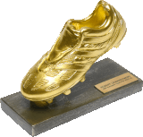
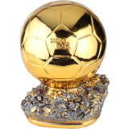

LIONEL MESSI
"De Argentina al Mundo"
MEJOR JUGADOR DEL MUNDO y uno de los MEJORES DE TODOS LOS TIEMPOS


Línea temporal de la Vida y Trayectoria de Lionel Messi
- 1987 - Nace Lionel Messi en la Ciudad de Rosario, Provincia de Santa Fe
- 1994 - Comenzó a entrenarse en las divisiones inferiores de Newell's Old Boys de Rosario
- 1998 - A la edad de once años, le fue diagnosticada una deficiencia de la hormona de crecimiento y tuvo que someterse a un doloroso y caro tratamiento de inyecciones que él mismo aprendió a ponerse
- 2000 - Tras una exitosa prueba, la familia se trasladó así a la ciudad de Barcelona, dónde Messi comenzó a jugar en las categorías inferiores de La Masía.
- 2004 - Tras 4 exitosas temporadas con las categorias juveniles, Messi se convierte en el jugador más jóven en debutar con el primer equipo del Barcelona, donde ese mismo año ganarían LaLiga
Además rechazó la oferta de jugar para la Selección Española, y decidió ser jugador de la Selección Argentina dónde también debutó con la categoria sub-20 - 2005 - Aprovechando sus minutos en cancha, Messi es ovacionado por primera vez tras un partidazo contra la Juventus y se consolidaba en el primer equipo, que luego ganarían la Supercopa de España y LaLiga.
Además se consagró campeón del Mundial Sub-20 con Argentina, donde recibió la Bota de Oro y el Balón de Oro como mejor jugador del Mundial y el Premio Golden Boy - 2005-06 - Durante esta temporada logran consagrarse Campeón de Champions League, LaLiga y la Supercopa de España. Además se convierte en el jugador argentino más joven en jugar un Mundial.
- 2006-07 - Con 19 años y siendo titular indiscutible tras sus increíbles actuaciones, marca su primer hack-trick ante nada más y nada menos que su clásico rival, Real Madrid.
- 2008-09 - Con la llegada de un nuevo DT, la "10" en la espalda y recuperado de varias lesiones, Messi empezaba a explotar su potencial marcando 38 goles en 51 partidos. Obteniendo así LaLiga, la Copa del Rey y su segunda Champions League. Además consigue la medalla de Oro en los JJ.OO. con la Selección Argentina Sub-23
- 2009-10 - A los 22 años, Leo consigue su primer Balón de Oro, Bota de Oro y el premio al Jugador Mundial de la FIFA tras consagrarse Campeón de la Supercopa de España, la Supercopa de Europa, el Mundial de Clubes y LaLiga. Conviertiendo a su equipo como el mejor del mundo tras conseguir 6 títulos en un año natural (2009)
- 2010-11 - Leo ayudó a su equipo a lograr 16 victorias consecutivas en liga y obtiene su segundo balón de Oro al convertir 53 goles en 55 partidos que le sirvió para consagrarse Campeón de la Supercopa de España, LaLiga y obtener su tercera Champions League
- 2011-12 - Consigue su tercer Balón de Oro, su segunda Bota de Oro y el Premio UEFA al Mejor Jugador en Europa al conseguir la Copa del Rey, la Supercopa de Europa, el Mundial de clubes y anotar 73 goles en 60 partidos
- 2012-13 - En esta temporada se convierte en el Primer Jugador en ganar 4 Balones de Oro consecutivamente y su tercera Bota de Oro al ganar LaLiga y romper dos records históricos: Marcar más de 190 goles en LaLiga con el Barcelonay Anotar 91 goles en 69 partidos en un año calendario (2012)
- 2013-14 - A pesar de sus lesiones, Leo marca una gran temporada con 41 goles en 46 partidos y ser premiado con el Balón de Oro del Mundial al salir Subcampeón con Argentina
- 2014-15 - Con un nuevo DT (3 en tres temporadas), Leo decide volver a jugar como extremo derecho para formar parte de uno de los mejores tridentes ofensivos de la historia junto a Neymar y Suárez. Esta temporada logran consagrarse Campeón de la Champions League, Copa del Rey y LaLiga con Leo marcando 58 goles en 57 partidos. Por su mérito recibió el premio al Mejor Jugador en Europa por segunda vez.
- 2015-16 - Tras la obtención de su 5° Balón de Oro por su gran 2015, vuelven a afianzarse a la competencia nacional y logran ganar LaLiga y la Copa del Rey por segunda temporada consecutiva Además Leo vuelve a ser subcampeón de la Copa América con la selección Argentina en 2 años consecutivos(2015-16)
- 2016-17 - Durante esta temporada logra obtener el Pichichi al goleador de la temporada y la Bota de Oro ambas por cuarta vez tras convertir 54 goles en 52 partidos que ayudaron al equipo a ganar la Supercopa de España y la Copa del Rey
- 2017-18 - Tras obtener LaLiga y su 4ta Copa del Rey de manera consecutiva logran una racha de 43 partidos invictos con Leo siendo nuevamente Pichichi y ganando otra Bota de Oro
- 2018-19 - Durante esta temporada ya como Capitán de su equipo, logra quedarse con la Supercopa de España y otro título de LaLiga. Tras anotar 51 goles en 50 partidos es premiado con el Pichichi y Bota de Oro (3 de manera consecutiva) ambas por Sexta vez
- 2019-20 - Leo cierra el 2019 ganando el Premio The Best, su 6° Balón de Oro y el Premio Laureus entregado por primera vez a un futbolista. Además terminó la temporada una vez más como máximo goleador y asistidor de LaLiga, ganando una vez más el Pichichi
- 2020-21 - Tras intenciones de Leo de abandonar el club, decide jugar su última temporada para seguir batiendo records. Se convirtió en el Máximo Goleador de la historia del fútbol de Primera división y Máximo Goleador en la historia del fútbol en un mismo club. Además obtuvo su séptima Copa del Rey y su 8vo Pichichi (5° de manera consecutiva)
- 2021-22 - Tras consagrarse por primera vez Campeón con Selección Argentina en la Copa América jugada en Brasil. En el que fue premiado como máximo goleador, asistidor y mejor jugador del torneo. Leo se despíde oficialmente del FC Barcelona, club con el que estuvo ligado 20 años, jugó 778 partidos oficiales, marcó 672 goles y ganó 35 títulos. Su nuevo club sería el París Saint-Germain de Francia, en el que juega actualmente. Leo terminaría su gran año obteniendo su 7mo Balón de Oro